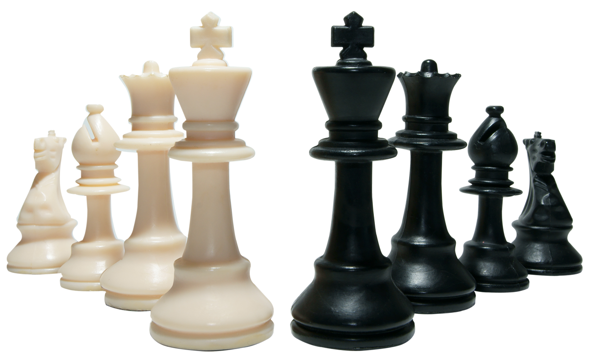

Welcome to Bryan's page
This page is all about Chess.
If you love chess you will love this.

Interesting facts
- The word "Checkmate" in Chess comes from the Persian phrase "Shah Mat," which means"the King is dead."
- The new pawn move, where pawns were allowed to advance two squares on its first move instead of one, dies first introduced in Spain in 1280.